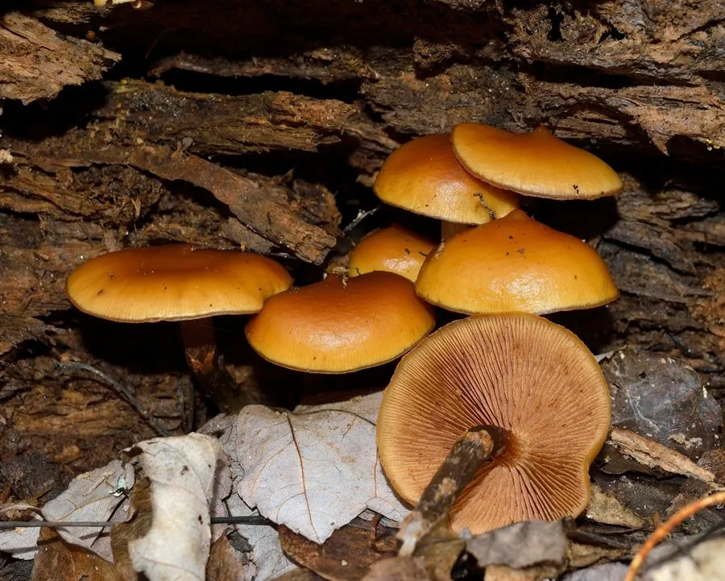

真菌 · 真菌界
秋盔孢伞 Galerina marginata

球盖菇科小型蘑菇，菌盖黄褐、菌柄有细环，含鹅膏毒肽，属剧毒菌，误食可致肝衰竭死亡，禁止采食。
- 分类
- 门担子菌门纲伞菌纲目伞菌目科球盖菇科属盔孢伞属
- 栖息环境
- 针叶树与阔叶树的腐木、树桩及苔藓上，秋季成小群
- 地理分布
- 北半球温带广布，中国东北、西南及欧洲、北美常见
- 保护级别
- 暂无评估；种群稳定
物种志
秋盔孢伞的子实体小型，菌盖直径 1–4 厘米，初期钟形，后平展，中央凸起，表面黄褐、蜜黄至棕褐色，光滑，湿时微黏，边缘有条纹。菌肉薄，淡黄褐色，气味带粉味。菌褶淡黄后变锈褐色，较密，直生。菌柄长 2–6 厘米，直径 0.2–0.5 厘米，褐色，上部有白色丝膜状细环，下部色深。孢子印锈褐色。
秋盔孢伞生于针叶树与阔叶树的腐木、树桩与苔藓上，秋季发生，常成小群。它含有鹅膏毒肽，属剧毒菌：误食后潜伏 6–24 小时，先出现呕吐腹泻，随后进入“假愈期”，数日后暴发肝肾功能衰竭，可致死，且无特效解毒药。它与可食的某些小蘑菇、甚至与致幻的裸盖菇外形相似，是欧美因误认而致死的主要毒菌之一。凡小型褐色、生于腐木、孢子印锈褐的蘑菇，一律不采食。
形态与习性
- 菌盖直径 1–4 厘米，黄褐至棕褐，边缘有条纹
- 菌褶淡黄后变锈褐色，较密
- 菌柄长 2–6 厘米，褐色，上部有白色细环
- 孢子印锈褐色，孢子具小疣
- 毒性含鹅膏毒肽，可致肝衰竭死亡，禁止采食
- 病程潜伏 6–24 小时，先胃肠症状后“假愈期”
趣味知识
- 秋盔孢伞含鹅膏毒肽，毒性与致命的鹅膏菌相同，几朵即可致命。
- 它的中毒过程有“假愈期”：呕吐腹泻后看似好转，数日后肝衰竭暴发。
- 它常被误认为可食的小蘑菇或致幻的裸盖菇，是欧美致死中毒的常见原因。
- 凡生于腐木、菌盖褐色、孢子印锈褐色的小蘑菇，都应视为高危。